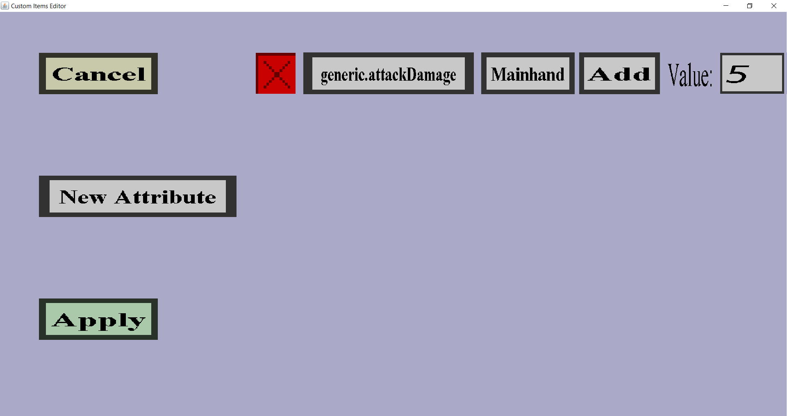

The attribute modifiers edit menu can be used to configure the attribute modifiers a custom item
will get in-game. If the custom item currently has a single attribute modifier that adds 5 attack
damage while it's in the main hand, it should look like this:

On the left are the 'Cancel', 'New Attribute' and 'Apply' button. Clicking on the 'Cancel' button
will bring you back to the item edit menu you came from without keeping the changes you made in this menu.
Clicking on the 'Apply' button will also bring you back to the item edit menu you came from, but will
keep the changes you made here.
Clicking on the 'New Attribute' will add a new row for an attribute modifier, just like the one shown
in the screenshot above. It may contain different values, depending on what kind of custom item you are editing.
Additionally, there is a red cross, an attribute button ('generic.attackDamage' above), a slot button
('Mainhand' above), an operation button ('Add' above) and a text field for the attribute value ('5' above).
- Clicking on the red cross will remove its corresponding attribute modifier row.
-
The attribute is what this attribute modifier is going to change when the custom item is in the right slot.
The following attributes are currently allowed:
- generic.maxHealth: Manipulates the maximum health
- generic.knockbackResistance: Manipulates the chance the player ignores knockback after taking damage
- generic.movementSpeed: Manipulates the movement (walking) speed of the player
- generic.attackDamage: Manipulates the damage the player will deal with basic attacks
- generic.armor: Manipulates the armor bar next to the health and the damage taken when the player is attacked
- generic.armorToughness: Manipulates the effectivity of armor when a lot of damage is taken in one hit
- generic.attackSpeed: Manipulates the amount of time players have to 'wait' between doing full-strength basic attacks
- generic.luck: Manipulates the likeliness of getting good loot from mob kills and chests in dungeons
See this page for more information.
Clicking on the attribute button allows you to change the attribute to modify.
It will bring you to a small menu where you can either click 'Cancel' to keep the current attribute
or click on another button to change the attribute to the attribute on the button.
-
Attribute modifiers only have effect if the (custom) item is being held in the right slot.
It won't have any effect if it's in another slot or place in the inventory.
Clicking on the slot button allows you to change the slot of the attribute modifier.
It will bring you to a small menu where you can either click 'Cancel' to keep the current slot
or click on another button to change the slot to the slot on the button.
-
The operation determines what happens with the Value (see next bullet point).
The operation must be one of the following:
-
Add: the Value will be added directly to the attribute value of the player.
Deciding the right Value can be tricky if you don't know what the 'normal' value is.
-
Add factor: the Value will be multiplied with the base value for the attribute of the player
and then added to the attribute value of the player. Using this is more predictable than
using just Add because you don't need to know the normal value: If you use 1.0, you will simply
double the normal value. Unlike Multiply, the bonus Value doesn't scale with the other attribute
modifiers, so having two Add factor attribute modifiers with value 1.0 will triple the normal value
rather than quadruple it.
-
Multiply: Multiplies the attribute value of the player with (1 + Value).
Unlike Add factor, this will scale with other attribute modifiers and effects, so using
Multiply with a Value of 1.0 will really double the original attribute value of the player and
having 2 of those will quadruple it.
Clicking on the operation button allows you to change the operation of the attribute modifier.
It will bring you to a small menu where you can either click 'Cancel' to keep the current slot
or click on another button to change the operation to the operation on the button.
-
The value determines how strong the effect of the attribute modifier will be.
What the value will do exactly, depends on the Operation (previous bullet point).
Clicking on the text edit field on the right of 'Value:' allows you to change the value of the
attribute modifier. The value must be a number and doesn't have to be an integer.